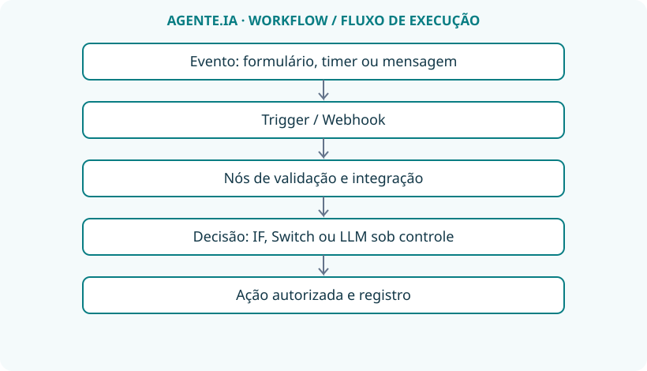
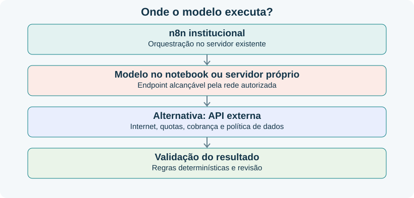
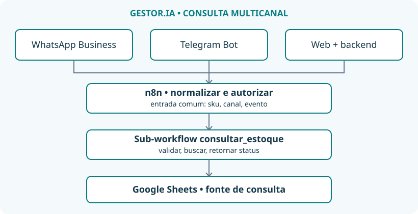
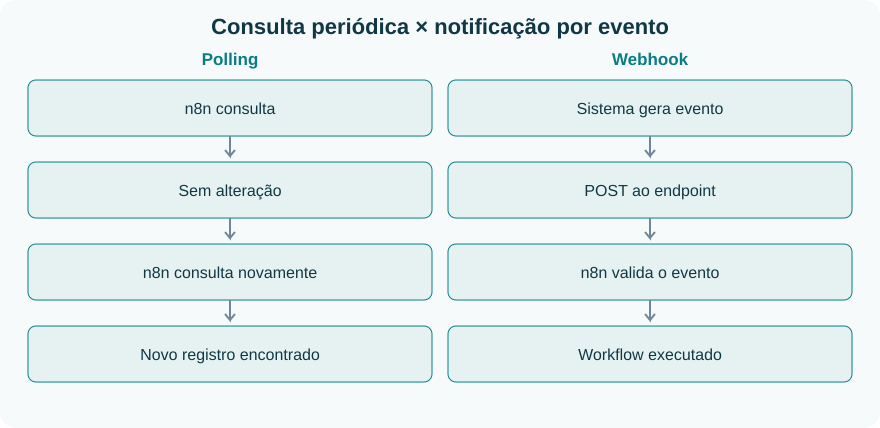
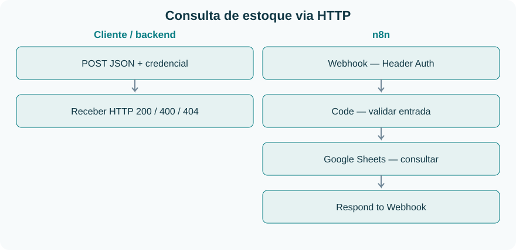
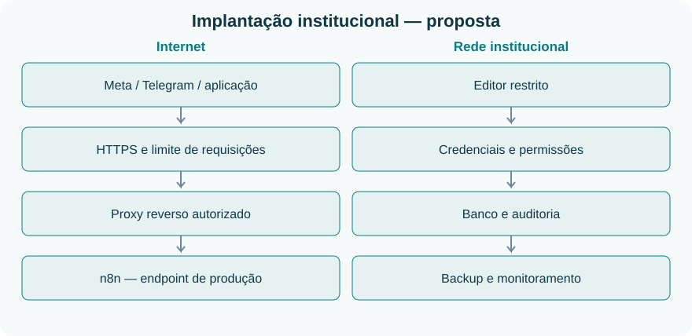
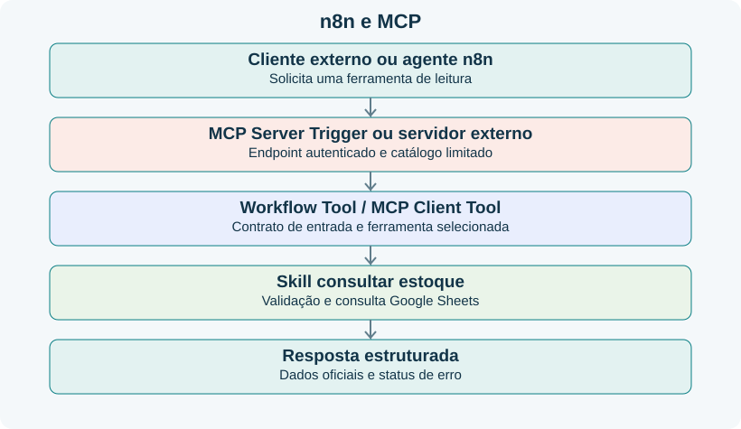
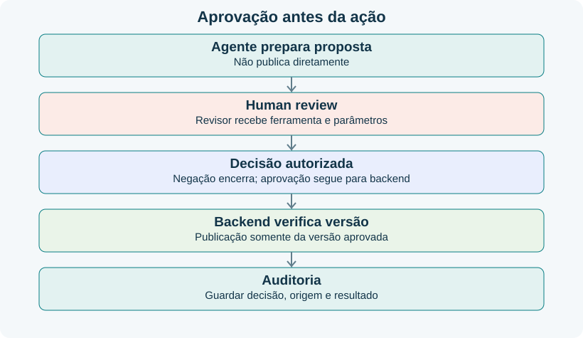

n8n — Automação inteligente e aplicações integradas
Do primeiro workflow sem IA à integração com Google Workspace, WhatsApp, Telegram, aplicações web e agentes.
1. O que é o n8n?
What is n8n?
O n8n é uma plataforma visual de automação de processos, integrações e orquestração com recursos de IA. Um workflow representa uma sequência de nós e caminhos de decisão; um agente de IA pode selecionar ferramentas de acordo com um objetivo, sob limites. Um fluxo não se torna agente apenas por chamar um LLM. A escolha inicial deve ser a regra mais simples capaz de resolver o problema.
| Conceito | Exemplo |
|---|---|
| Trigger | Recebimento de formulário |
| Node | Consultar Google Sheets |
| Execution | Uma execução do fluxo |
| Credential | Autorização para uma API |
| Expression | {{ $json.curso }} |
| Pipeline | Entrada → validação → transformação → decisão → saída → log |
Leia: Documentação · IA
1.1 Do processo ao agente
| Estratégia | Exemplo | Decisão |
|---|---|---|
| Workflow determinístico | Validar inscrição e confirmar | Regras explícitas |
| Pipeline | Normalizar registros e gerar indicadores | Transformações ordenadas |
| Cadeia LLM | Classificar mensagem em categorias | Modelo produz saída limitada |
| AI Agent | Escolher ferramenta de consulta conforme pergunta | Modelo seleciona ação dentro de limites |
Use o menor grau de autonomia necessário. Uma integração pode combinar as quatro estratégias.
2. Arquitetura e ciclo de execução
Architecture and execution
O servidor executa os workflows e mantém credenciais e históricos conforme suas configurações. O editor é interface de desenvolvimento, não a interface do usuário final. Dados transitam como itens JSON; arquivos usam dados binários. A execução pode falhar em qualquer nó: trate erros e estados de negócio separadamente.

Exemplo: uma inscrição alimenta a planilha, um IF valida campos, uma ação registra o resultado e o Gmail confirma; não há necessidade de LLM.
2.1 Anatomia do editor
- Crie um workflow privado de teste. O canvas contém nós, conexões e ramificações; o painel de cada nó mostra Parameters, Settings e dados de entrada/saída.
- Use Manual Trigger para ensaiar; Edit Fields para mapear valores; IF/Switch para decidir; Code somente quando transformação visual não basta.
- Execute um nó e examine cada item JSON. Teste com entrada ausente, errada e válida. Em Executions, inspecione status e duração.
- Publique somente após revisão. Separe fluxos de teste e produção, credenciais e URLs.
3. Aplicações e exemplos reais
Applications and examples
| Área | Integração | Aplicação | Laboratório |
|---|---|---|---|
| Educação / unesp.IA | Forms → Sheets → Gmail → Drive/Docs | Inscrições, certificados e organização de turmas | 02 e 07 |
| Varejo / Gestor.IA | WhatsApp → Sheets → resposta | Consulta de estoque e orçamento preliminar | 04 e 09 |
| Atendimento | Telegram → Sheets → Telegram | Consulta de cursos, alertas de estoque | 03 |
| Aplicação web | Frontend → backend → Webhook → Sheets | Solicitações e consulta a dados | 05 |
| Serviços | Calendar → Gmail | Agendamento com controle de conflito | 06 |
| Gestão pública | Gmail → classificação → Sheets | Triagem administrativa sem decisão automática | 08 |
| Indústria / multiempresa | Webhook → validação empresa_id → banco → alerta | Ordens de manutenção e indicadores; isolamento por organização | 11, extensão |
| Observatório | WhatsApp/Telegram/Web → n8n → backend → curadoria | Observar.Dia com publicação autorizada | 12 |
Exemplos da comunidade (não testados nesta sessão): Exemplos Sheets + Telegram · Exemplo WhatsApp + Telegram + Sheets (comercial) · Templates. O segundo template é um exemplo comercial de terceiros; sua aquisição não é necessária.
4. Acesso ao servidor institucional
Institutional server
O servidor n8n já existe. Portanto, o estudante não precisa instalar Docker nem n8n no notebook para a formação. Solicite URL HTTPS, conta individual, versão instalada, edição/licença, permissões de criação e política de credenciais ao administrador. Não presumimos endereço, versão ou configurações.
- Acesse a URL institucional fornecida pelo responsável; autentique-se com sua conta individual.
- Crie workflow privado com prefixo turma-aluno-lab; deixe desativado até validar.
- Registre a versão e edição, confira disponibilidade dos nós e quotas internas.
- Use dados sintéticos e credenciais de teste. Não altere variáveis, rede, containers ou plugins do servidor.
- Se não houver acesso, execute apenas a simulação local por meio de ambiente descartável autorizado; consulte as opções oficiais de implantação.
O administrador é responsável por HTTPS, reverse proxy, URL pública correta de webhook, backups, atualização, chave de criptografia persistente e política de execução. Expor apenas rotas necessárias, não publicar o editor sem controle.
5. Configuração inicial e Google Workspace
Setup and Google Workspace
Cada aluno deve usar contas/arquivos de teste e o menor conjunto de permissões. Em self-hosted, a configuração OAuth deve ser feita com credenciais Google apropriadas; não pressupor o OAuth gerenciado do n8n Cloud.
- No Google Cloud Console, crie ou utilize projeto de laboratório autorizado. Habilite APIs correspondentes a Sheets, Drive, Docs, Gmail e Calendar conforme necessário.
- Configure tela de consentimento e usuários de teste ou aplicação interna, de acordo com as políticas da organização.
- Crie OAuth Client ID (Web application). No n8n, adicione a credencial do serviço Google e copie a OAuth Redirect URL exibida. Cadastre exatamente essa URL no Google Cloud.
- Preencha client ID e client secret na credencial, não no código. Conecte conta de teste e autorize somente escopos necessários.
- Teste leitura de uma planilha fictícia. Se houver erro redirect_uri_mismatch, confira URL/HTTPS; se o acesso for bloqueado, peça autorização administrativa. Não contorne políticas do Workspace.
Para Sheets/Drive, conta de serviço pode ser alternativa quando o nó e o cenário suportarem, compartilhando somente arquivos necessários. Gmail/Calendar podem requerer OAuth do usuário ou configuração administrativa específica. Tokens podem expirar/revogar; quotas e políticas do Google continuam aplicáveis.
6. Modelos locais e APIs
Local models and APIs
Três estratégias: modelo no notebook, servidor próprio de inferência ou API externa. O n8n institucional precisa conseguir alcançar o endpoint pela rede: localhost no container não é o notebook do estudante. Ollama é runtime para modelos; n8n é orquestrador. O Lumi-4B (CEIA/UFG) é alternativa experimental se houver runtime compatível e endpoint autorizado; não pressupor suporte a tool calling.
| Cenário | Benefício | Limite |
|---|---|---|
| Sem LLM | Previsibilidade e ausência de custo por token | Não interpreta linguagem livre |
| Ollama / servidor próprio | Controle de infraestrutura | GPU/RAM, latência, manutenção, compatibilidade |
| API externa | Modelo sem instalação local | Internet, custos, dados ao provedor, quotas |
Atividade complementar: n8n + Ollama. Compare regras, cadeia de LLM e agente sobre as mesmas entradas, com validação determinística. Veja IA.

6.1 Teste comparativo
No computador autorizado, instale Ollama conforme a ficha, baixe um modelo compatível e use ollama run qwen3:8b para um teste textual. No n8n, conecte Ollama Chat Model ao Basic LLM Chain e configure a URL de rede fornecida pelo administrador. Não abra a porta do Ollama à internet. Em servidor próprio, vLLM pode disponibilizar uma API compatível com OpenAI; use um modelo que o runtime suporte. Lumi-4B deve ser avaliado experimentalmente, inclusive contexto e chamadas de ferramentas.
| Modelo | Pesos em 4 bits (teórico) | Pesos em 16 bits (teórico) |
|---|---|---|
| 4B | 2 GB | 8 GB |
| 8B | 4 GB | 16 GB |
| 14B | 7 GB | 28 GB |
Valores apenas dos pesos, antes de cache, contexto e overhead; não garantem execução. Teste a mesma entrada com regras, modelo local e API. Registre hardware, latência, acertos, tokens e custo; não confunda ausência de cobrança por token com custo zero.
7. Primeiro workflow sem IA
First workflow without AI
Comece pelo Lab 01. Importe o workflow de simulação, inspecione a entrada, execute e leia o JSON. O catálogo contém C001 com 30 vagas; o workflow não realiza inscrições. Altere para C999 e depois para ação não autorizada. Essa prática mostra que regras simples podem ser melhores que uma chamada ao LLM.
{"acao":"consultar","curso":"C001"}{"status":"ok","nome":"Introdução à IA","vagas":30}Editor: adicione nó pelo menu, conecte saída à entrada, selecione credencial se necessário, teste nó e workflow; Examine Executions para diagnosticar. Não publique antes de validar.
8. Google Sheets, Forms, Gmail, Drive e Calendar
Google integrations
| Ferramenta | Operação didática | Lab |
|---|---|---|
| Google Forms | Recebe formulário; respostas vinculadas ao Sheets | 02 |
| Google Sheets | Get Row(s), Append or Update Row | 02–05, 07, 09 |
| Gmail | Confirmação ou rascunho revisado | 02, 06, 08 |
| Google Calendar | Consulta e criação de evento | 06 |
| Google Drive | Copiar modelo, baixar arquivo | 07, 08 |
| Google Docs | Preencher modelo de documento | 07 |
Ao usar Sheets, defina cabeçalho, tipo, identificador e fonte de verdade. Evite linhas repetidas em retries; em produção use PostgreSQL ou backend transacional para unicidade, concorrência, autorização e histórico. Planilha serve bem como tabela pequena, fonte consultiva ou painel de acompanhamento, não como banco transacional complexo.
Para aplicações do M12: inscrição automática, certificados, resumo de documentos e assistente didático. Consulte os laboratórios com etapas e arquivos.
8.1 Dados e contrato da planilha
| Aba | Cabeçalhos mínimos | Uso |
|---|---|---|
| catalogo | id,nome,vagas | Consulta de cursos |
| estoque | sku,produto,quantidade,preco | Consulta por SKU |
| inscricoes | id,nome,email,curso,status | Registro de inscrições |
| frequencia | id,nome,frequencia,regular | Elegibilidade de certificado |
Crie uma planilha de teste e importe CSVs do kit. No nó Google Sheets, selecione documento e aba, operação Get Row(s) ou Append or Update Row, configure coluna de correspondência e confira se o resultado contém exatamente o registro esperado. Nunca configure um agente com permissão geral de escrita para uma consulta simples.
9. WhatsApp, Telegram e aplicações web
Channels and web apps
Exemplo aplicado — Google Sheets + WhatsApp e Telegram: um cliente consulta P001, o workflow verifica identidade e consulta a planilha; retorna oito unidades se o registro existir. Telegram e WhatsApp são adaptadores de entrada/saída; o sub-workflow de estoque é o mesmo.
| Canal | Requisito | Restrição |
|---|---|---|
| Telegram | BotFather, token, bot de teste; webhook HTTPS acessível | Um webhook por bot; evitar testes concorrentes; usuário inicia conversa |
| Meta Developer, business portfolio, app e número de teste, credenciais Cloud API | Consentimento, templates aprovados quando necessários, políticas, eventuais custos, webhook público | |
| Web | Backend autenticado → Webhook n8n | Nunca inserir segredo no JavaScript do navegador; URL de teste diferente de produção |
| Google Sheets | OAuth e planilha autorizada | Quota, expiração de token, concorrência e acesso a dados |
Nós oficiais WhatsApp Business Cloud não são pareamento pessoal por QR Code. Bridges comunitárias não oficiais exigem avaliação de risco e termos; não são recomendadas para o laboratório institucional. Veja WhatsApp credenciais · WhatsApp Trigger · Telegram Trigger · Webhook.
Roteiros: Telegram, WhatsApp, Web.
Um único serviço, três canais de acesso
O mesmo cadastro pode ser consultado com ESTOQUE P001 no WhatsApp, /estoque P001 no Telegram ou por uma interface web. Nenhum canal precisa duplicar a regra de negócio. No Lab 03 o exemplo inicial é de cursos; no Lab 09, adapte-o à consulta de estoque compartilhada.

| sku | produto | quantidade | preco |
|---|---|---|---|
| P001 | Caderno | 8 | 12,50 |
| P002 | Caneta | 0 | 3,00 |
Resposta esperada: “Caderno — 8 unidades, conforme o estoque consultado.” Se o produto estiver cadastrado com zero unidades, informe indisponibilidade; não confunda com produto não localizado. Não autorize compra ou reserva nesta primeira versão.
9.1 Webhooks, APIs e arquiteturas orientadas a eventos
Webhooks, APIs and event-driven architecture
Um webhook recebe uma requisição HTTP quando um sistema deseja notificar um evento ou acionar um serviço. Compare com polling: consultar uma fonte periodicamente. Ambos podem iniciar workflows, mas têm custos e requisitos diferentes. Um endpoint de consulta também pode ser construído com Webhook; nem toda chamada a esse endpoint é uma notificação de evento.

| Mecanismo | Quando usar |
|---|---|
| API | Consulta ou operação solicitada por cliente |
| Webhook | Evento externo ou entrada HTTP |
| Trigger | Qualquer início de execução |
| HTTP Request | Chamar API ou webhook de outro sistema |
| MCP | Descoberta e chamada de ferramentas por agentes |
| Sub-workflow | Reutilização interna |
| Schedule Trigger | Horários e polling |
Passo a passo: consulta P001 sem LLM
Importe o arquivo webhook-estoque.json (catálogo sintético embutido). O fluxo está inativo e exige credencial antes de publicar. Em seguida substitua o catálogo pelo nó Google Sheets seguindo o Lab 05.
| Nó | Configuração |
|---|---|
| Webhook | POST; path exclusivo por aluno; Header Auth; Using Respond to Webhook node |
| Code | Run Once for All Items; validar body.produto e gerar status HTTP |
| Google Sheets (montagem manual) | Get Row(s); aba estoque; filtro código = produto; credencial somente leitura |
| Respond to Webhook | JSON: ={{ $json.body }}; Response Code: ={{ $json.httpStatus }} |

Selecione Test URL e Listen for Test Event; execute a requisição uma vez e examine os itens. Após aprovação, publique/ative e copie Production URL. Não confunda essas URLs. Use Postman, Insomnia ou cURL.
curl -i -X POST "$LAB_URL" \
-H "Content-Type: application/json" \
-H "X-Lab-Key: $N8N_LAB_KEY" \
-d '{"produto":"P001"}'Resposta esperada (dados fictícios): HTTP 200, estoque 8. P999 → 404; código inválido → 400. O nó de autenticação deve rejeitar credenciais ausentes ou incorretas antes do Code. Verifique a execução no painel.
Servidor institucional: limites e configuração

Somente o administrador deve configurar DNS, TLS, proxy, firewall e exposição de endpoints. A documentação indica N8N_WEBHOOK_URL a partir de 2.30.0; versões anteriores utilizam WEBHOOK_URL (marcada obsoleta a partir de 2.35.0). N8N_PROXY_HOPS deve corresponder à topologia; exemplo de um proxy:
N8N_WEBHOOK_URL=https://hooks.example.com/ N8N_PROXY_HOPS=1
Encaminhar X-Forwarded-For, X-Forwarded-Host e X-Forwarded-Proto no proxy confiável. Restringir o editor e /rest; não desativar o sandbox de formulários. Endereços ilustrativos. Limites de tempo, tamanho, concorrência e quotas continuam existindo. O webhook padrão documentado aceita até 16 MB, mas no laboratório use limite menor no proxy. CORS não é autenticação. Retorne 202 para processos longos apenas depois de persistir o pedido; forneça ID para consulta posterior.
Segurança e confiabilidade
Combine credenciais, autorização por operação, validação de JSON, rate limiting, idempotência, logs sem segredos e revisão humana. Para Meta/Telegram, use os triggers oficiais e valide a origem conforme o protocolo do canal. Para eventos com efeitos, use chave única persistente e transação; não use apenas a memória do workflow ou uma busca seguida de inserção não atômica no Sheets. O backend web deve manter segredos fora do navegador.
Conceitos: HTTP · JSON · Polling · API REST · Arquitetura orientada a eventos · Reverse proxy · Rate limiting
Referências oficiais: Webhook · Respond to Webhook · HTTP Request · Reverse proxy.
Prática: Lab 05 — Webhooks · Lab 11 — Segurança.
10. Skills, ferramentas, sub-workflows e agentes
Skills and agents
Uma skill descreve capacidade e procedimento; n8n pode implementá-la como sub-workflow com contrato, entrada, saída e validação. Execute Sub-workflow chama fluxo reutilizável; AI Agent pode utilizar ferramentas de consulta, memória e modelo. Não confundir documentação SKILL.md com execução automática em n8n. O segundo cérebro pode ser um repositório documental/banco e recuperação controlada; memória de conversa não é cadastro institucional.
Exemplo consultar_estoque(sku) → {status,quantidade,fonte}. Dois canais chamam a mesma capacidade. Use validação e autorização no backend; aprovação humana para ações críticas. Sub-workflow · IA.
10.1 Cérebro, memória e segundo cérebro
O cérebro operacional é uma representação conceitual: AI Agent + modelo + contexto + ferramentas + regras do workflow. A memória de conversa auxilia continuidade; não é fonte de verdade. Utilize um identificador de sessão derivado da identidade autenticada, não um ID arbitrário enviado pelo usuário. Para o segundo cérebro, mantenha fontes, versões, autoria e aprovação em um repositório autorizado; RAG recupera trechos pertinentes, mas não garante sua correção.
Exemplo Observar.IA: armazenar observações e fontes em PostgreSQL, recuperar conteúdo aprovado, registrar proveniência e separar dados de instruções. Uma skill procedimental é documentada e implementada em sub-workflow; versionar seu contrato e testar entradas inválidas.
10.2 Sistemas multiagentes
Comece com workflows coordenados: Radar coleta; Verificador confere; Curador prepara rascunho. Só chame cada componente de agente quando tiver capacidade de escolher ações por objetivo. AI Agent pode chamar outros agentes ou ferramentas de workflow conforme versão. O backend mantém estados e autorização, e a revisão humana antecede publicação. Evite delegação ilimitada: limite iterações, profundidade, tempo e ferramentas.
10.3 MCP — Model Context Protocol
MCP padroniza a descoberta e chamada de ferramentas; não substitui autenticação, autorização, nem é requisito para uma integração simples com Sheets.

| Modalidade | Como configurar | Uso |
|---|---|---|
| MCP Client Tool | Conectar à porta Tools do AI Agent; endpoint e credencial; selecionar ferramentas | Consumir ferramenta externa |
| MCP Server Trigger | Criar workflow com trigger MCP; conectar Custom n8n Workflow Tool; definir autenticação e path | Expor consultar_estoque a cliente autorizado |
| MCP da instância | Administrador habilita acesso; autoriza workflows e clientes conforme versão | Operar workflows por cliente externo; opção avançada |
- Crie e teste o sub-workflow de leitura do Lab 09 antes de expor qualquer ferramenta.
- Em workflow separado, adicione MCP Server Trigger. Escolha autenticação Bearer/Header ou OAuth se suportado; não use None no servidor compartilhado. Conecte uma Workflow Tool e selecione o sub-workflow.
- Copie a URL de teste; habilite a escuta e configure cliente compatível com transporte oferecido. Teste listagem e chamada da ferramenta com P001.
- Para consumir um servidor, use MCP Client Tool com credencial e selecione apenas consultar_estoque. Conecte ao AI Agent e limite iterações.
- Teste credencial inválida, SKU inexistente e tentativa de ferramenta não exposta. Publicar apenas com autorização administrativa.
O MCP da instância pode oferecer criação e edição de workflows em versões recentes; não o habilite amplamente para alunos. Revogue clientes quando necessário. Atrás de proxy, SSE/HTTP streaming exigem configuração adequada; filas e réplicas exigem atenção administrativa.
Documentação oficial: MCP Client Tool · MCP Server Trigger · MCP da instância.
11. Quando usar, vantagens e desvantagens
When to use
| Quando usar | Quando preferir outra abordagem |
|---|---|
| Integrações SaaS e APIs, notificação, eventos, agendamento | Backend próprio para regras transacionais, alta concorrência e autorização fina |
| Pipeline pequeno/médio, prototipação visual | Python/SQL/NiFi/Airflow conforme volume, dependências e controle de dados |
| Automação repetitiva e auditável | SDK/agent runtime para autonomia, memória e testes de software mais sofisticados |
| Orquestrar LLM com tools controladas | Regra determinística quando suficiente; não usar IA para validar permissões |
| Vantagem | Desvantagem |
|---|---|
| Visualização e menor código repetitivo | Fluxos grandes tornam-se difíceis de revisar e testar |
| Nós prontos e HTTP Request | APIs mudam, limites externos permanecem |
| Self-hosting e controle dos dados locais | Infraestrutura, atualizações, disponibilidade e risco operacional ficam a cargo da instituição |
| Integração rápida com IA | Custos, alucinações, latência e limites do modelo |
| Exportação de workflows JSON | Dependência de versões de nodes/credenciais; versionamento e recursos de colaboração variam por edição |
12. Segurança, guardrails, custos e restrições
Security and constraints
Servidor próprio não significa automação gratuita, ilimitada ou offline. O n8n roda localmente, mas Google, Meta, Telegram e LLMs externos continuam serviços de terceiros. Internet, autenticação, taxas, quotas e políticas permanecem. Frequência de execução, memória, CPU, concorrência, disco, histórico e resposta a falhas são responsabilidade da infraestrutura.
| Restrição | Ação recomendada |
|---|---|
| Edição/licença | Conferir Community, Registered Community, Business ou Enterprise; colaboração, RBAC e gestão avançada de ambientes variam. Não presumir recursos pagos. |
| Uso comercial/externo | A licença fair-code não equivale a licença livre irrestrita. Verificar SUL e FAQ para acesso de terceiros, hospedagem, white-label e oferta comercial; validar cenário educacional compartilhado com responsável. |
| Segurança do editor | Contas individuais, menor privilégio, instância separada para alunos se isolamento insuficiente; limitar nodes de código, shell, arquivos e comunidade. |
| Credenciais | Cofre de credenciais, OAuth de teste, não colocar tokens em JSON, código ou logs. Persistir chave de criptografia e backups sob controle administrativo. |
| Webhooks | TLS, autenticação, rate limit e verificação de assinatura quando aplicável; editor restrito. Não confiar em campos role/user fornecidos pelo cliente. |
| Privacidade | Minimizar dados, política LGPD, retenção, redigir logs, aprovação para uso de dados reais. |
| Escala | Definir quotas e timeout; filas/Redis + workers quando apropriado; capacidade depende de DB e infraestrutura. |
| Ações externas | Idempotência, retry limitado, backoff, revisão humana e estado de envio; monitorar 429 e falhas parciais. |
Guardrails: instruções do LLM não bastam. Aplique IF/Code, schema, autorização no backend e restrição de tools. Um segundo cérebro deve guardar conhecimento com proveniência e permissão de escrita. Consulte Edições · Licença · Auditoria · Filas.
Decisões que cabem ao administrador do servidor
Registrar versão e edição, definir isolamento entre turmas, limites de execução, backup e restauração, controle de atualização e política de community nodes. Verificar se a licença cobre o uso proposto, especialmente quando estudantes externos ou clientes podem criar ou editar workflows. A FAQ do fornecedor atualizada em outubro de 2026 diferencia serviços internos de disponibilização do editor a terceiros; em caso de dúvida, consultar a equipe de licenciamento do n8n, não presumir gratuidade irrestrita.
Para webhooks de Telegram atrás de proxy, a documentação orienta configurar WEBHOOK_URL com URL HTTPS correta e suporte a WebSockets quando necessário; não são tarefas do estudante. Diagnóstico oficial.
12.1 Guardrails nativos — configuração passo a passo
O nó Guardrails valida ou sanitiza texto. Ele não substitui RBAC, autenticação, isolamento nem autorização de ferramentas. Verifique se está disponível na versão instalada.

| Tipo | Implementação | LLM |
|---|---|---|
| Keywords | Lista de termos | Não |
| PII | All ou Selected; conferir entidades e falsos negativos | Não |
| Secret Keys | Strict/Balanced/Permissive | Não |
| URLs | Lista de URLs e esquemas permitidos | Não |
| Custom Regex | Expressão regular personalizada | Não |
| Jailbreak | Modelo, prompt e threshold | Sim |
| NSFW | Modelo, prompt e threshold | Sim |
| Topical Alignment | Escopo permitido e threshold | Sim |
| Custom | Política textual e threshold | Sim |
- Adicione Guardrails após a normalização e antes do modelo. Operation = Check Text for Violations; Text To Check =
{{ $json.texto }}. - Adicione Keywords (ex.: BLOQUEIO_TESTE) e Custom Regex (ex.:
TEST_SECRET_[A-Z0-9]+). Conecte Pass à consulta e Fail a saída neutra, sem reproduzir o texto bloqueado. - Para anonimizar, use outro Guardrails em Sanitize Text, escolha PII ou Custom Regex. Confirme na saída o campo sanitizado e mapeie-o ao modelo; não encaminhe o texto bruto.
- Para Jailbreak / Topical Alignment, conecte Chat Model ao conector Model. Defina escopo de consulta de produtos; teste threshold em conjunto rotulado e registre falsos positivos e negativos. Não use como autorização.
- Após a resposta do modelo, repita verificação de texto e valide schema e valores contra fonte oficial. Trate indisponibilidade do guardrail como falha fechada para ações sensíveis.
Sanitização não cobre necessariamente identificadores brasileiros; valide CPF e outros padrões com regras próprias. Dados originais podem continuar no histórico de execução; configure retenção e acesso. Verificadores por LLM podem errar e consumir tokens.
Documentação oficial: Guardrails.
12.2 Aprovação humana (HITL) e políticas de ação

- No AI Agent, abra o conector Tools e selecione Human review, se disponível. Escolha Telegram, Gmail ou WhatsApp Business Cloud conforme credenciais e versão.
- Conecte ao passo de revisão apenas a ferramenta que exige autorização, por exemplo criar_rascunho. Configure destinatário autorizado fixo e mensagem contendo ferramenta e parâmetros revisáveis.
- Teste aprovar e negar. Em negação ou expiração, não execute a ação. Não envie segredos ao revisor.
- Para publicação real, mesmo após HITL, backend verifica revisor autenticado, papel, conteúdo, versão e estado, grava auditoria e usa chave idempotente.
Documentação oficial: Human review.
12.3 Checklist do administrador
Inventarie versão/licença, contas, isolamento de turmas, TLS, escopos OAuth, permissão de nodes, credenciais, quotas, retenção, restauração, acesso MCP, logs e fluxos publicados. Execute auditoria de segurança via n8n audit apenas com responsável autorizado. Não exponha editor, não use credenciais institucionais compartilhadas e não conceda ao modelo shell ou acesso irrestrito a arquivos.
Documentação oficial: Auditoria.
13. Diagnóstico e avaliação
Troubleshooting and evaluation
| Sintoma | Investigar |
|---|---|
| Webhook não chega | URL correta, publicado/ativo, DNS, TLS, proxy, firewall e registro no provedor |
| 403 Google / Meta | Permissão, conta, escopo, app e aprovação do administrador |
| 429 | Quota, concorrência, reduzir ritmo, backoff limitado |
| Dados vazios | Mapeamento do item JSON, nomes das colunas, filtro e tratamento de ausência |
| Resposta duplicada | ID de evento, estado persistido, retry e reconciliação |
| LLM inventa dado | Consulta à fonte oficial, validação e fallback humano |
Avalie tempo, falhas, quantidade de operações, custo de APIs, taxa de acerto e impactos de erro. Entregue JSON sanitizado, esquema, testes positivos e negativos, riscos e limitações. Não registre resultados imaginados como medições.
13.1 Avaliação experimental e evidências
Compare regra versus LLM e com versus sem controles utilizando somente dados sintéticos. Registre versão dos nodes, entradas, resultado esperado/observado, tempo, consumo de API/modelo, taxa de acerto e bloqueios. Uma simulação de código não comprova funcionamento do serviço real. Não exporte pinData com informações privadas.
14. Laboratórios e avaliação
Labs and assessment
Sequência de 12 práticas; os arquivos de simulação são importáveis e não requerem serviços externos. Cada roteiro contém a montagem da integração real, exigindo credenciais e configuração no servidor.
| Lab | Atividade |
|---|---|
| Lab 01 | Primeiro workflow — consulta de cursos sem IA |
| Lab 02 | Google Forms + Sheets + Gmail — inscrições |
| Lab 03 | Google Sheets + Telegram — consulta e avisos |
| Lab 04 | Google Sheets + WhatsApp — atendimento e estoque |
| Lab 05 | Aplicação web + Webhook + Sheets |
| Lab 06 | Google Calendar + Gmail — agenda |
| Lab 07 | Google Drive + Docs + Sheets — certificados |
| Lab 08 | Gmail + Drive + Sheets — triagem de solicitações |
| Lab 09 | Skills reutilizáveis e sub-workflows |
| Lab 10 | LLM local e API externa — classificação e agente |
| Lab 11 | Guardrails, logs, erros e administração |
| Lab 12 | Projeto integrador — Observar.IA multicanal |
Materiais integrados à Wiki: abra cada laboratório abaixo para acessar o roteiro, importar os workflows JSON e obter os dados, códigos e testes da atividade. Todos os arquivos já estão incluídos na distribuição completa da Wiki; não é necessário baixar outro pacote.
Para executar os testes locais comuns, consulte o guia de execução, os casos de teste e o script de validação.
Testes locais das regras: testar.js · cenários. Após extrair o kit, use node testar.js. Não substitui testes do n8n e de integrações reais.
15. Referências e conexão com M11/M12
References and curriculum
M11 — Agentes de IA, Skills e Automação Inteligente: conceitos, modelagem de skills, ferramentas visuais, LLMs/RAG/memória, custos/segurança e projeto. M12 — Automação Inteligente com n8n, Pipelines, Skills e LLMs: prática, desde triggers e pipelines até aplicações educacionais, comerciais, industriais e multiempresa, guardrails e projeto integrado. A versão arquivada do M12 recomenda 36 horas. Os 12 laboratórios aqui são organização proposta para a Wiki, não mudança curricular.
M11 · M12 · Padrão OpenClaw. Fontes curriculares: cópias arquivadas m11.html e m12.html; páginas publicadas não estavam acessíveis na consulta. Documentação n8n consultada em novembro de 2026; conferir versão instalada.
Google OAuth2 · Google Sheets · Telegram Trigger · Telegram · WhatsApp credenciais · WhatsApp Trigger · WhatsApp Business Cloud · Webhook · IA · Sub-workflow · Edições · Licença · Auditoria · Filas · Templates · Exemplos Sheets + Telegram · Exemplo WhatsApp + Telegram + Sheets (comercial) · Primeiro workflow · Documentação
15.1 Articulação didática com M11/M12
| Unidades | Aplicação na formação |
|---|---|
| M11 11.1–11.3 | Conceitos, skills e automação visual — Labs 01, 09 |
| M11 11.4–11.6 | Agentes, memória, RAG, governança — Labs 10–12 |
| M12 12.1–12.5 | Fundamentos, nodes, pipelines — Labs 01–05 |
| M12 12.6–12.7 | Skills e LLMs — Labs 09–10 |
| M12 12.8–12.10 | Educação, varejo, serviços e indústria — Labs 02–08, 12 |
| M12 12.11–12.12 | Segurança e projeto integrado — Labs 11–12 |
Base: cópias arquivadas dos módulos M11/M12; consulta pública indisponível. A articulação é proposta editorial, não alteração da ementa.